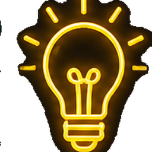
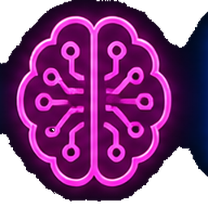

指導單位：臺中市政府教育局 | 報告日期：114學年度

包含「資訊科技核心素養轉化」與「個資防護防詐騙」教學示範。
包含到校諮詢、週三進修資訊研習、以及入校入班扶助輔導講座。

包含 TVBS、中時新聞、風傳媒、Yahoo新聞及國語日報等，大幅提昇影響力。
廣泛涵蓋體育、數學、班級經營及教務管理，有效提升校園行政效率與學習樂趣。
臺中市114學年度資訊教育議題輔導分團 | 感謝聆聽
本學年累計研發成果 47+ 件教材教案、35+ 款 AI 助教、20+ 項校園行政輔助軟體，並執行超過 45 場次推廣服務，全面嘉惠臺中市國中小學師生。